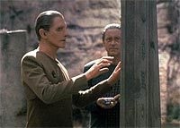
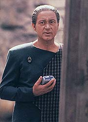
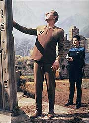
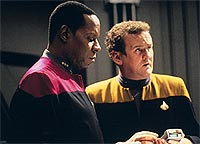
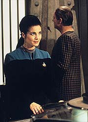

MANCHETE
DO EPISDIO
Histria
sobre busca interior de Odo
alterna entre bons e maus momentos
Episdio
anterior | Prximo
episdio
Sinopse:
Data Estelar: 47391.7.
O cientista Bajoriano Mora Pol vem
Deep Space Nine e convida Odo para uma expedio ao quadrante
Gama que ele acredita poder revelar uma pista sobre o passado do
Comissrio. Mora foi o cientista Bajoriano que estudou Odo,
provou a sua conscincia e desenvolveu a sua capacidade de mudar
de forma, em um processo em que Odo partiu de um "monte de
goma" dentro de um bquer at a capacidade de assumir uma
forma humanide, similar do prprio doutor Mora.
Entretanto, Odo tem muita mgoa do tempo em que ele se sentia um
literal "experimento vivo" nas mos de Mora. O
relacionamento entre os dois em muito lembra o de pai e filho.

Odo,
Mora, Dax e outro cientista Bajoriano de nome Weld se teleportam
para a superfcie do planeta em questo, no quadrante Gama. L
encontram uma pequena "forma de vida" com caractersticas
metamrficas e um monolito que eles teleportam para o Explorador.
Quando o monolito se desmaterializa, se segue um imediato
terremoto e a liberao de uma grande quantidade de gs vulcnico.
Todos, com exceo de Odo desmaiam. O Comissrio ordena um
transporte de emergncia para os quatro. De volta estao,
enquanto os outros trs se recuperam, Odo informa a Sisko do
ocorrido.
Mais tarde naquela noite, Kira acorda Sisko para informar que o
laboratrio foi destrudo e a "forma de vida" sumiu.
Mais tarde O'Brien encontra, nos dutos de ventilao, os restos
da "forma de vida", a qual aparentemente no tem condies
de sobreviver na atmosfera da estao. Naquela noite, enquanto
Bashir estudava os restos da "forma de vida", ele
atacado por uma "criatura". Usando um bisturi laser ele
consegue repelir tal "criatura", que foge pelos dutos de
ventilao.
Mais tarde Dax conduz uma comparao entre um amostra da
"forma de vida" e um resduo da "criatura" e
conclui que as duas so distintas. Ela deixa o computador
trabalhar na identificao da segunda amostra, porm Mora j
identificou a "criatura" --Odo.

Mora
informa a Odo de sua descoberta e fora a questo de que outros
crimes inexplicveis no passado da estao poderiam tambm ter
sido causados por Odo (sem o conhecimento consciente do Comissrio)
e a nica chance de cura, e de real entendimento do Comissrio,
o retorno dele ao laboratrio de Mora em Bajor.
Odo postula que o gs vulcnico o afetou de alguma forma afinal.
Mora sabe que Odo est provavelmente certo, mas fora Odo ao mximo,
tentando, ainda assim, fazer crer a ele que o nico caminho para
a sua cura seria ele voltar com Mora para Bajor.
Mora no quer perder, de jeito algum, a oportunidade de ter Odo
novamente sob os seus cuidados. No pico de sua fria e desespero,
Odo se transforma na "criatura" e Mora foge
aterrorizado.
Entendendo que de certa forma responsvel pela situao,
Mora se oferece como isca. Mora diz que os outros dois ataques
anteriores foram motivados por uma tentativa de libertar a
"forma de vida" e por um ataque ao prprio doutor.
O plano funciona e a criatura reverte ao estado natural. Bashir e
Mora conseguem eliminar todo o gs do organismo de Odo,
curando-o. Mora e Odo conversam na enfermaria e prometem iniciar
um relacionamento de verdade, assumindo os reais sentimentos que tm
um pelo outro.
Comentrios:
Definitivamente uma melhora em relao recente "trilogia
do terror", mas ainda longe da qualidade que podemos esperar
desta srie. Possivelmente os motivos do tombo sofrido neste episdio
estejam explicados nas inscries do monolito, mas como a Dax no
terminou de decifr-las at o fim do episdio, vou tentar dar
uma ajuda nas prximas linhas.

Em
dois episdios anteriores nesta temporada, "Second
Sight" e "Rivals",
tivemos o caso de uma trama razoavelmente bvia e mundana que com
o lastro de imbecilidades Sci-Fi, como a "projeo teleptica
clnica" e a "mquina de probabilidade", foram
literalmente para o "toilete". Talvez sem tal
"lastro" esses episdios pudessem chegar ao menos no nvel
do medocre, o que chato constatar, pois havia um potencial
inerente que foi perdido. Entretanto isso atinge nveis drsticos
neste presente episdio.
Com uma slida premissa envolvendo o passado de Odo com Mora e um
ator convidado do calibre de James Sloyan (que trabalha muito bem,
obrigado, com o maravilhoso Rene Auberjonois), "The
Alternate" poderia ter sido fantstico. Infelizmente,
uma total falta de foco e um roteiro completamente bagunado
colocam tudo a perder. Chega a ser engraado como um slido
drama familiar (ou a menos uma alegoria para um) pode ser posto de
lado em detrimento de uma absurda histria derivada de
"filmes B" com efeitos visuais e msica de qualidade e
gosto duvidosos.
O ponto alto do episdio foi sem dvida a potente cena entre
Mora e Odo no escritrio de segurana no comeo do quinto ato.
Podemos entender, em sua obstinao de no deixar passar a
oportunidade de ter Odo de volta, que Odo foi de fato a melhor
coisa da vida de Mora, seu maior feito no campo profissional e
tambm o filho que ele nunca teve. O esforo para obter
resultados e as presses dos Cardassianos devem ter sido brutais
na poca e devem ter criado um elo que foi muito doloroso partir
quando Odo deixou os seus cuidados. Por outro lado, no difcil
entender que, de todas as pessoas, Mora aquele que consegue
atingir o lado mais frgil de Odo. Muita coisa reprimida de ambas
as partes, as quais vem tona de uma forma brutal. Bravo para
esta cena!
A trama do episdio tem srios problemas (que infelizmente
"estupidificam" vrios personagens no processo), alm
de vrios elementos no-resolvidos.

A
primeira coisa foi remover o monolito, sem pensar duas vezes.
Porque no tirar umas fotos? Ser que a posio do monolito no
era importante para decifrar as suas inscries e/ou o seu prprio
funcionamento? Na melhor das hipteses, eles roubaram uma
sepultura e jogaram o mtodo cientfico pela janela. De fato, no
feita (nem tentada) nenhuma explicao da origem e da relao
entre o monolito, quem viveu naquele planeta, o gs, o terremoto
e a "forma de vida" encontrada.
O monolito --por ser acentuado, no curso do episdio, com
diferentes ngulos de cmera e fundos musicais-- inicialmente
sugerido como uma espcie de "chave para o mistrio",
mesmo suas inscries recebem ateno no sentido de um esforo
para decifr-las ser iniciado. Porm, ao final do episdio,
aquele grande monolito acaba como um motivo de chacota para o episdio,
que aparentemente foi rescrito BRUTALMENTE j sendo filmado.
O'Brien caando a "forma de vida", naqueles termos, nos
dutos de ventilao, foi extremamente imbecil (ele prprio
reconhece isso no dilogo).
Um outro mal movimento foi utilizar mais uma "pista para
origem de Odo" de uma forma bastante manipulativa, somente
para iniciar a histria do episdio --um problema menor, pois
esse no era o foco do episdio, mas ainda assim um problema.

A
direo de David Carson (que partiu desse episdio para dirigir
o filme "Generations") foi boa, especialmente
considerando a baguna que devem ter sido os dias de filmagem
deste episdio, com novas verses e novas pginas de roteiro
chegando a todo momento. Entretanto, teria sido interessante se,
na cena em que a "criatura" atacou Bashir, o bom doutor
tivesse sentido algum sensao de calor imediatamente antes do
ataque.
Rene Auberjonois foi excelente, mostrando um Odo muito mais
pessoal do que de costume, trazendo tona um legtimo
ressentimento com relao a Mora. Os demais regulares
apresentaram o bom desempenho de sempre, nada mais, nada menos.
James Sloyan foi soberbo, mostrando ao mesmo tempo os reais
sentimentos de Mora e todos os elementos da personalidade do
doutor que geraram ressentimento por parte de Odo. Existe uma
suficiente semelhana fsica, com a ajuda da maquiagem, para
tornar o trabalho dos dois ainda mais interessante do que j .
Grande qumica aqui!!! Matt McKenzie s um extra com algumas
falas.
De quem eram os restos mortais que Quark estava vendendo no incio
do episdio? De Rom, talvez? (eheh!) De qualquer forma uma bela
cena que atesta o quanto Quark e Odo funcionam bem juntos. Idem
para a cena entre Jake e Ben.
"The Alternate" um confuso e esquizofrnico
episdio que alterna momentos verdadeiros e bem atuados que
revelam interessantes elementos da psique de Odo, com outros
momentos que poderiam tranqilamente estar em um mediano
"filme B".
Citaes
Odo - "Humanoid death
rituals are an interest of mine."
("Rituais de morte de humanides so do meu
interesse.")
Quark - "Death rituals?"
("Rituais de morte?")
Odo - "Everybody needs a hobby."
("Todo mundo precisa de um hobby.")
Dax - "All things considered, the computer's having a bad
week."
("Levando tudo em conta, o computador anda tendo uma m
semana.")
Bashir - "I prescribe rest --because it's hard for a
doctor to go wrong with that one."
("Prescrevo descanso --porque difcil um mdico erra com
essa prescrio.")
Trivia:
 Introduo do doutor Mora Pol
(interpretado pelo fantstico James Sloyan), o cientista que
estudou Odo enquanto este esteve em seu laboratrio em Bajor.
Mais sobre James Sloyan no artigo sobre as mltiplas faces dos
atores de DS9 --para l-lo, clique aqui.
Introduo do doutor Mora Pol
(interpretado pelo fantstico James Sloyan), o cientista que
estudou Odo enquanto este esteve em seu laboratrio em Bajor.
Mais sobre James Sloyan no artigo sobre as mltiplas faces dos
atores de DS9 --para l-lo, clique aqui.
Mais da histria passada de Odo ser
vista no episdio da terceira temporada, "Heart Of
Stone".
Os Ferengis tm um interessante
ritual funerrio: os seus mortos so dissecados vcuo,
fatiados em pedaos e vendidos, e o dinheiro arrecadado usado
para pagar as dvidas do falecido.
O "esboo" (pitch, em ingls)
desta histria tambm foi fornecido por Jim Trombetta e explora
elementos estabelecidos em um "pitch" da temporada
passada que resultou em "The
Forsaken".
Originalmente Rene Auberjonois faria
os dois papis, o de Odo e de Mora, mas o tempo adicional de
tirar e colocar a maquiagem em Auberjonois tornaria impossvel a
filmagem nos tpicos sete dias alocados a cada episdio. Pela
mesma razo, a idia original de fazer Armin Shimerman
interpretar Quark e sua me no episdio da terceira temporada "Family
Business", foi tambm abandonada. Entretanto, Quark
acabou aparecendo de "Drag" em um dos piores episdio
de toda srie, o INFINITAMENTE ABISMAL "Profit and
Lace", da sexta temporada.
Aparentemente, na
poca a equipe de roteiristas acreditava que o pai de Ben Sisko j
havia morrido. luz da presena do seu pai em "Homefront",
da quarta temporada, devemos entender (com alguma boa vontade no
processo), que Joseph Sisko chegou to perto da morte que s
retornou por uma milagre, da o pesar na fala de Ben para Odo.
Ficha
tcnica:
Histria de Jim Trombetta
e Bill Dial
Roteiro de Bill Dial
Direo de David Carson
Exibido em 03/01/1994
Produo: 032
Elenco:
Avery Brooks como
Benjamin Lafayette Sisko
Ren Auberjonois como Odo
Nana Visitor como Kira Nerys
Colm Meaney como Miles Edward O'Brien
Siddig El Fadil como Julian Subatoi Bashir
Armin Shimerman como Quark
Terry Farrell como Jadzia Dax
Cirroc Lofton como Jake Sisko
Elenco convidado:
James Sloyan
como dr. Mora Pol
Matt McKenzie como dr. Weld Ram